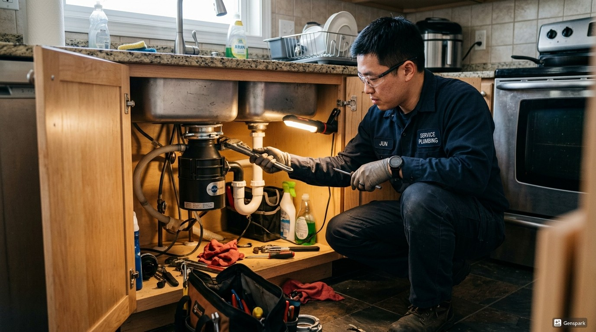
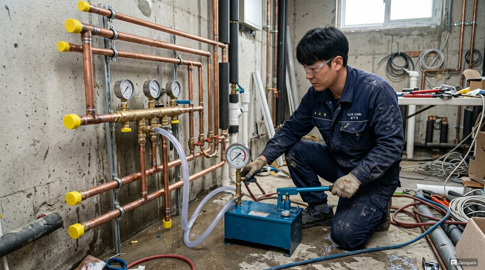
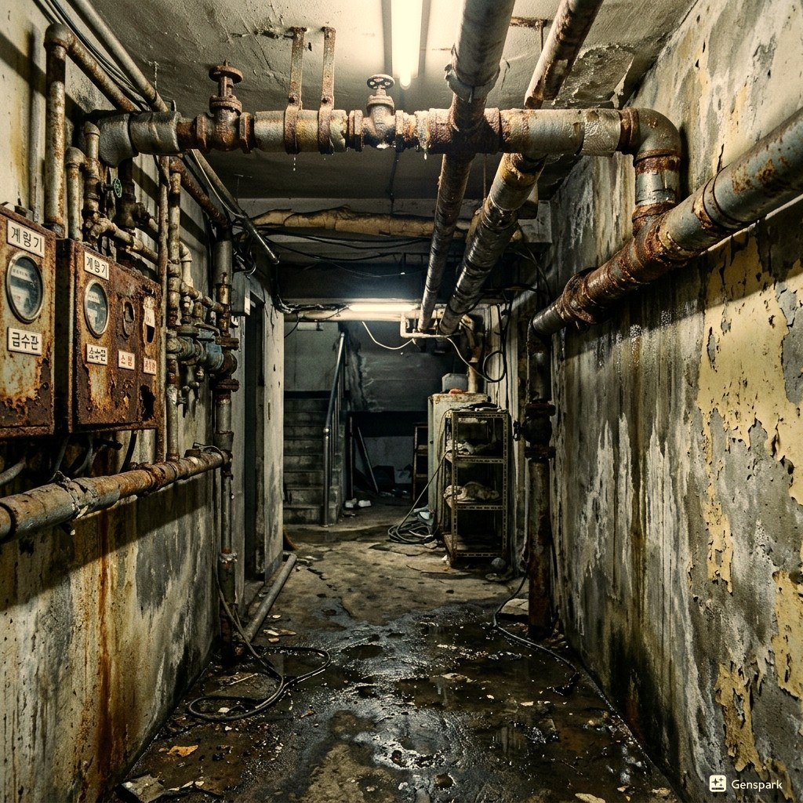

인천부평구 부평역, 삼산동, 갈산동 지역에서 배관청소 문제가 발생하면 제우스시설관리가 해결합니다. 노후 배관 내부의 이물질과 스케일을 전문 장비로 청소하는 전문 서비스를 제공합니다.
20년 이상의 현장 경험과 드레인 기계, 관로 내시경, 고압세척기, 관로탐지기 등 최첨단 장비를 보유하고 있어 어떤 상황에서도 정확한 진단과 완벽한 해결이 가능합니다.

▲ 인천부평구 현장에서 전문 장비로 배관청소 해결 작업 중
✅ 드레인 기계 - 스프링 와이어로 배관 내 이물질을 물리적으로 파쇄·제거
✅ 관로 내시경 카메라 - 배관 내부를 실시간 영상으로 확인하여 정확한 진단
✅ 고압세척기 - 최대 200bar 고압수로 배관 내벽 오염물 완벽 세척
✅ 관로탐지기 - 매설 배관의 위치와 깊이를 정확히 탐지

▲ 고압세척기를 이용한 배관 내부 청소 작업
인천부평구 전 지역에 28분 내 출동합니다. 야간·주말·공휴일 추가 요금 없이 동일한 서비스를 제공합니다.
📞 전화 한 통이면 정확한 견적을 바로 안내해드립니다
현장 상황에 따라 비용이 달라지기 때문에,
전화 상담 시 증상만 말씀해주시면 예상 비용을 바로 안내드립니다.
✅ 출장비 무료 | ✅ 미해결시 비용 0원 | ✅ 추가 요금 없음

▲ 인천부평구 배관작업 전문 장비 투입 작업 현장
20년 이상 현장 경험으로 어떤 복잡한 상황에서도 해결합니다. 인천부평구 지역에서 배관청소 문제가 발생하면 전화 한 통으로 전문가가 출동합니다.
제우스시설관리는 서울·경기·인천 전 지역에서 24시간 긴급 출동 서비스를 제공합니다. 출장비 무료, 미해결 시 비용 0원이라는 파격적인 정책으로 고객 부담을 최소화합니다.
숙련된 전문 기술자가 최첨단 장비(드레인 기계, 관로 내시경 카메라, 고압세척기, 관로탐지기)를 직접 가지고 출동하여 현장에서 즉시 문제를 해결합니다.
Step 1. 전화 접수 및 상담
증상 파악 후 필요 장비를 미리 준비합니다.
Step 2. 28분 내 현장 출동
가장 가까운 전문 기술자가 즉시 출동합니다.
Step 3. 전문 장비로 진단
내시경 카메라, 관로탐지기 등으로 정확한 원인을 파악합니다.
Step 4. 문제 해결
드레인 기계, 고압세척기 등 전문 장비로 문제를 해결합니다.
Step 5. 결과 확인
작업 결과를 고객에게 확인시켜 드리고, 재발 방지 가이드를 안내합니다.
건물 유형: 신축 상가 | 지역: 인천부평구
밤 11시 긴급 연락. 28분 내 현장 도착하여 즉시 문제 해결. 야간임에도 추가 비용 없이 동일 요금 적용. 고객 만족도 최상. 작업 시간 45분.
건물 유형: 20년 이상 된 건물 | 지역: 인천부평구
오래된 배관의 내부 스케일 축적으로 인한 문제. 내시경 진단 후 고압세척으로 배관 내부 청소. 고객에게 정기 점검 주기를 안내하고, 필요 시 부분 배관 교체를 권고. 작업 시간 1시간.
A. 30년 이상 된 배관은 내부 스케일과 녹이 심할 수 있습니다. 내시경 진단 후 청소로 충분한지, 부분 교체가 필요한지 정확히 판단합니다. 청소만으로도 배수 성능이 크게 개선되는 경우가 많습니다.
A. 유사하지만 범위가 다릅니다. 배관청소는 급수관, 배수관, 난방관 등 건물 내 모든 배관을 대상으로 하며, 하수관세척은 하수 배출관에 한정됩니다. 필요에 따라 적합한 서비스를 안내합니다.
A. 네, 고압세척 방식은 화학 약품을 사용하지 않으므로 작업 완료 즉시 안전하게 사용할 수 있습니다. 작업 후 내시경으로 청소 상태를 확인하여 결과를 보여드립니다.